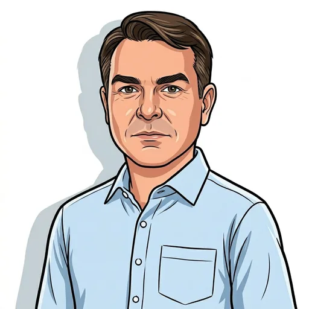
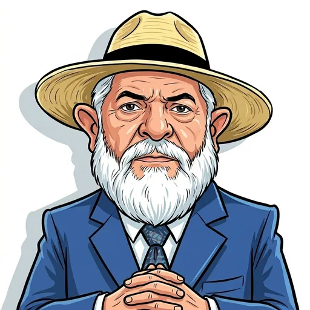

Palavra por Palavra
Quanto cada candidato
fala do que importa
pra você?
saúde
segurança
emprego
educação
casa
Palavras nos planos de governo e em entrevistas · Eleições 2026

Flávio
Bolsonaro

Lula